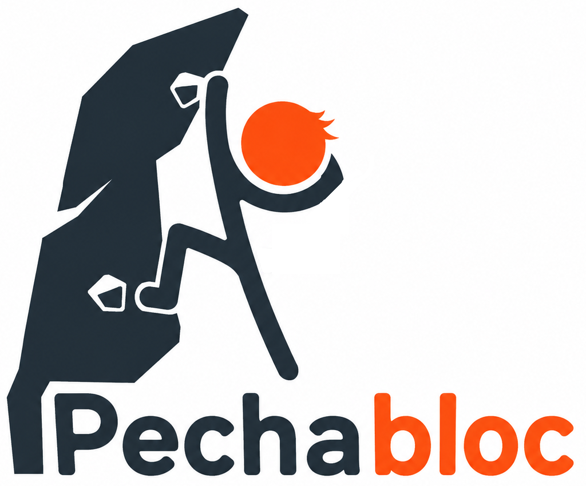

Le même site, avec le même contenu, dans 3 styles différents. Ouvrez-les et dites-moi votre préférée. Dans chacune, en haut à droite : ☀️/🌙 pour le mode jour ou nuit, et FR/EN pour la langue.
Sombre et orange, titres en grosses lettres : le style montré en premier.
Ouvrir →Clair et aéré, cartes douces, très lisible : sobre et rassurant pour les familles.
Ouvrir →Couleurs vives orange et rose, sections en biais, animations au défilement.
Ouvrir →Maquettes de travail : rien n'est décidé, les étiquettes « bientôt » marquent ce qui reste à fixer.